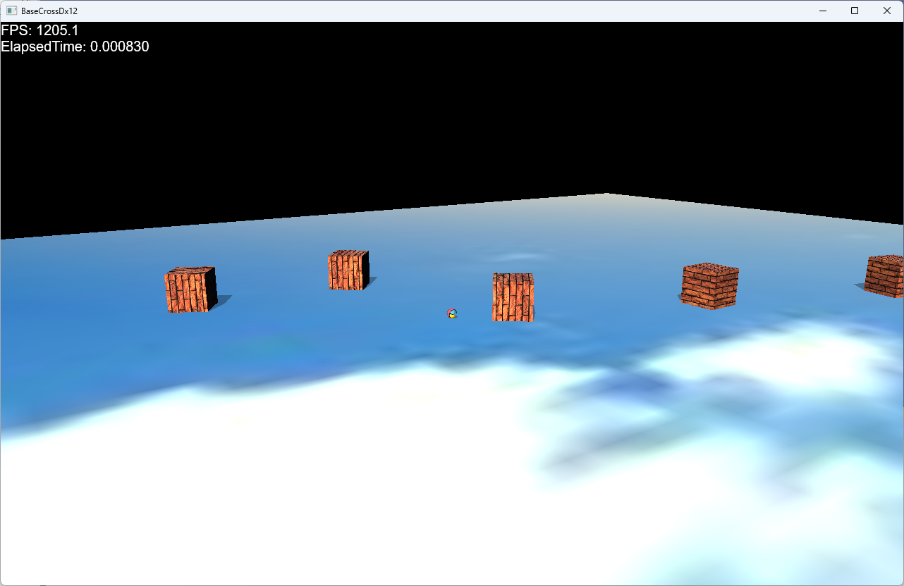

void FixedBox::OnCreate() {
//Transformコンポーネントを取り出す
auto ptrTrans = GetComponent<Transform>();
auto& param = ptrTrans->GetTransParam();
//PhysX関連
PhysxCreateParam pxParam;
physx::PxBoxGeometry scale(param.scale.x * 0.5f, param.scale.y * 0.5f, param.scale.z * 0.5f);
pxParam.pGeometry = &scale;
AddComponent<RigidbodyStatic>(pxParam);
auto ptrShadow = AddComponent<Shadowmap>();
ptrShadow->AddBaseMesh(L"DEFAULT_CUBE");
auto ptrDraw = AddComponent<BcPNTStaticDraw>();
ptrDraw->AddBaseMesh(L"DEFAULT_CUBE");
ptrDraw->AddBaseTexture(L"SKY_TX");
ptrDraw->SetOwnShadowActive(true);
}
赤くなっているところがPhysXのコンポーネントRigidbodyStaticを実装しているところです。
void WallBox::OnCreate() {
auto ptrGameStage = std::dynamic_pointer_cast<GameStage>(GetStage());
//Transformコンポーネントを取り出す
auto ptrTrans = GetComponent<Transform>();
auto& param = ptrTrans->GetTransParam();
//PhysX関連
PhysxCreateParam pxParam;
physx::PxBoxGeometry scale(param.scale.x * 0.5f, param.scale.y * 0.5f, param.scale.z * 0.5f);
pxParam.pGeometry = &scale;
auto pRigDynamicComp = AddComponent<RigidbodyDynamic>(pxParam);
auto pRigDynamic = pRigDynamicComp->GetRigidDynamic();
auto ptrShadow = AddComponent<Shadowmap>();
ptrShadow->AddBaseMesh(L"DEFAULT_CUBE");
auto ptrDraw = AddComponent<BcPNTStaticDraw>();
ptrDraw->AddBaseMesh(L"DEFAULT_CUBE");
ptrDraw->AddBaseTexture(L"WALL_TX");
ptrDraw->SetOwnShadowActive(true);
//ジャンプさせる
pRigDynamic->addForce(physx::PxVec3(0, 10, 0), physx::PxForceMode::eIMPULSE);
}
ここでは、動くオブジェクトであるRigidbodyDynamicコンポーネントが実装されています。physx::PxBoxGeometryがBoxタイプを指定しています。
void Player::OnCreate() {
GetStage()->SetSharedGameObject(L"Player", GetThis<Player>());
//Transformコンポーネントを取り出す
auto ptrTrans = GetComponent<Transform>();
auto& param = ptrTrans->GetTransParam();
//PhysX関連
PhysxCreateParam pxParam;
physx::PxSphereGeometry scale(param.scale.x * 0.5f);
pxParam.pGeometry = &scale;
pxParam.staticFriction = 1.0f;
pxParam.dynamicFriction = 1.0f;
pxParam.restitution = 1.0f;
auto pRigDynamicComp = AddComponent<RigidbodyDynamic>(pxParam);
auto pRigDynamic = pRigDynamicComp->GetRigidDynamic();
auto ptrShadow = AddComponent<Shadowmap>();
ptrShadow->AddBaseMesh(L"DEFAULT_SPHERE");
auto ptrDraw = AddComponent<BcPNTStaticDraw>();
ptrDraw->AddBaseMesh(L"DEFAULT_SPHERE");
ptrDraw->AddBaseTexture(L"TRACE_TX");
//透明処理
SetAlphaActive(true);
//カメラを得る
auto ptrCamera = std::dynamic_pointer_cast<MyCamera>(GetStage()->GetCamera());
if (ptrCamera) {
//MyCameraである
//MyCameraに注目するオブジェクト（プレイヤー）の設定
ptrCamera->SetTargetObject(GetThis<GameObject>());
ptrCamera->SetTargetToAt(Vec3(0, 0.25f, 0));
}
}
ここではphysx::PxSphereGeometry scale(param.scale.x * 0.5f);のように球体を指定しています。
void Player::MovePlayer() {
float elapsedTime = (float)Scene::GetElapsedTime();
auto angle = GetMoveVector();
//RigidbodyDynamicコンポーネントを取り出す
auto ptrRigid = GetComponent<RigidbodyDynamic>();
auto pRigDynamic = ptrRigid->GetRigidDynamic();
if (angle.length() > 0.0f) {
Vec3 tmpVelo = angle * m_Speed;
pRigDynamic->setLinearVelocity(bsmUtil::ToPxVec3(tmpVelo));
}
else {
pRigDynamic->setLinearVelocity(bsmUtil::ToPxVec3(Vec3(0)));
}
}
auto pRigDynamic = ptrRigid->GetRigidDynamic();のようにRigidDynamicオブジェクトを取り出し、pRigDynamic->setLinearVelocity()関数で、速度を変更します。物理オブジェクトでは基本的に位置情報などを直接変更しません。setLinearVelocityのように間接的に操作します。